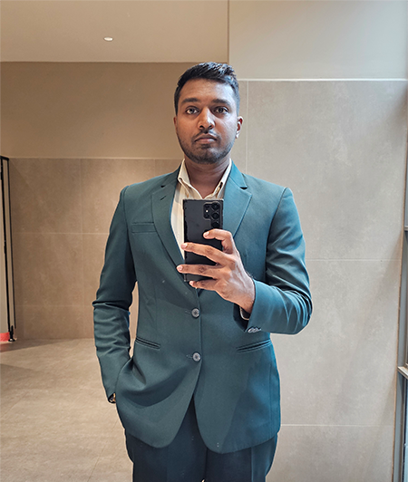

Resume
Dimuthu Caushal

Summary
A passionate and aspiring youth, eager to build a career in Software Engineering. My skill set includes foundational knowledge of VB.NET, C#, HTML, CSS, and SQL. Alongside my technical abilities, I bring strong problem-solving skills and a collaborative spirit, thriving in team environments. I am seeking opportunities to apply my knowledge and contribute to organizational success while continuing to learn and grow professionally.
Education
-
Higher Education
- Following BSc (Hons) Software Engineering, Edge Hill University
- Completed National Certificate In Information and Communication Technology Technician (NVQ L4), National Apprentice and Industrial Training Authority
-
Primary & Secondart Education
- D.S. Senanayake College, Colombo 07
Work Experience
-
Management Assistant - Telecommunications Regulatory Commission of Sri Lanka
- Assist management in compiling plans and reports.
- Support staff in preparing online data collection forms.
- Manage and update the division's web content.
-
Intern - Telecommunications Regulatory Commission of Sri Lanka
- Assist in creating and organizing documentation.
- Develop small databases for office use and data management.
- Coordinate parts and resources for ongoing projects.
- Provide support in daily administrative tasks.
- Prepare presentations based on supervisor's instructions.
- Contribute to various tasks as needed to support the team.
Skills
-
Soft Skills
- Effective Communication
- Analytical Thinking
- Adaptability
- Collaboration in Teams
-
Technical Skills
- VB.NET
- C#
- SQL
- HTML, CSS
- Microsoft Office Suite (Word, Excel, PowerPoint, Access, Outlook)
- Database Management and Creation
- Problem-Solving
Other